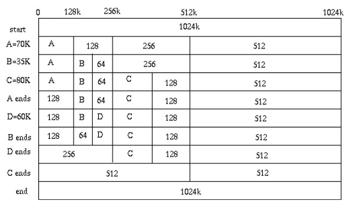
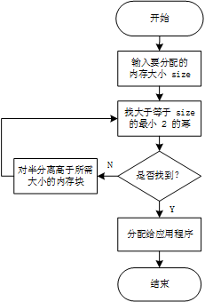
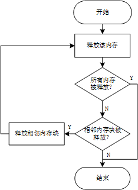

Netty 的内存管理使用了 buddy System，即伙伴分配算法。
该算法也是 Linux 内核的内存分配算法，这篇文章对该分配算法做一个简要探讨。
buddy system
伙伴分配的实质是一种特殊的“分离适配”，即将内存按照2的幂进行划分，相当于分离出若干个块大小一致的空闲链表，搜索该链表并给出同需求最佳匹配的大小。
表格中给的例子就是分配过程。

分配内存
内存分配的流程图如下：

释放内存
释放内存的流程图如下：

代码实现
代码实现以一个 16 单元的内存管理为例：
因为是按照 2 的幂次划分内存层次，层层分裂，自然会联想到使用二叉树的数据结构来实现。
分配器的整体思想是，通过一个数组形式的完全二叉树来监控管理内存，二叉树的节点用于标记相应内存块的使用状态：高层节点对应大的块，低层节点对应小的块，在分配和释放中使用节点的标记属性对块进行分离合并。
如图所示，假设总大小为 16 个单位的内存，于是我们可以建立一个深度为 5 的满二叉树，根节点从下表[0]开始，监控大小为 16 的块；它的左右孩子节点下标[1~2]，监控大小为8的块；第三层下标为 [3~6] 监控大小为 4 的块，以此类推。
分配器的数据结构如下：
1
2
3
4
| struct buddy2 {
unsigned size;
unsigned longest[1];
};
|
结构体中的 size 是管理的总内存单元数目，成员 longest 是二叉树的结点标记，表明所对应内存的空闲单位。
分配器的初始化代码如下：
1
2
3
4
5
6
7
8
9
10
11
12
13
14
15
16
17
18
19
| struct buddy2* buddy2_new( int size ) {
struct buddy2* self;
unsigned node_size;
int i;
if (size < 1 || !IS_POWER_OF_2(size))
return NULL;
self = (struct buddy2*)ALLOC( 2 * size * sizeof(unsigned));//分配器树的大小为 size 的 2倍
self->size = size;
node_size = size * 2; //满二叉树节点数
for (i = 0; i < 2 * size - 1; ++i) {
if (IS_POWER_OF_2(i+1))
node_size /= 2;
self->longest[i] = node_size;//给每个节点分配管理的内存单元
}
return self;
}
|
整个分配器的大小就是满二叉树的节点数目，该数目为所需内存单元的 2 倍。longest 记录了节点所对应的的内存块大小。
分配器初始化后，接下来就是进行实际的内存分配了。
分配方法的入参：分配器指针和需要分配的内存大小；
分配方法返回：内存块索引。
1
2
3
4
5
6
7
8
9
10
11
12
13
14
15
16
17
18
19
20
21
22
23
24
25
26
27
28
29
30
31
32
33
34
35
36
37
38
39
40
41
42
43
| int buddy2_alloc(struct buddy2* self, int size) {
unsigned index = 0;
unsigned node_size;
unsigned offset = 0;
if (self==NULL)
return -1;
if (size <= 0)
size = 1;
else if (!IS_POWER_OF_2(size))
size = fixsize(size);//调整为大于等于size的最小2的指数幂
//如果整个内存的大小都无法满足申请的 size，则直接返回失败
if (self->longest[index] < size)
return -1;
/*分配核心算法：因为 size 已经调整为2的指数幂，所以会直接从最大的内存单元开始对半分离匹配*/
/*深度优先遍历*/
for(node_size = self->size; node_size != size; node_size /= 2 ) {
//左子树有足够的空间
if (self->longest[LEFT_LEAF(index)] >= size)
index = LEFT_LEAF(index);
//右子树有足够的空间
else
index = RIGHT_LEAF(index);
}
//标记为已分配
self->longest[index] = 0;
//索引块偏移地址，作为返回值
offset = (index + 1) * node_size - self->size;
//从已分配节点开始回溯，更新父节点的内存容量
while (index) {
index = PARENT(index);
//取左右子节点的最大空闲值
self->longest[index] =
MAX(self->longest[LEFT_LEAF(index)], self->longest[RIGHT_LEAF(index)]);
}
return offset;
}
|
释放内存的代码如下：
1
2
3
4
5
6
7
8
9
10
11
12
13
14
15
16
17
18
19
20
21
22
23
24
25
26
27
28
29
30
31
32
33
34
35
| void buddy2_free(struct buddy2* self, int offset) {
unsigned node_size, index = 0;
unsigned left_longest, right_longest;
assert(self && offset >= 0 && offset < size);
node_size = 1;
//根据 offset 推算出来在分配器树中节点的 index
index = offset + self->size - 1;
//第一个需要释放的节点 index开始回溯，直到找到 longest 值为0的节点
for (; self->longest[index] ; index = PARENT(index)) {
node_size *= 2;
if (index == 0)
return;
}
//更新index所在节点的容量值
self->longest[index] = node_size;
while (index) {
//上溯父节点
index = PARENT(index);
node_size *= 2;
//左子节点容量
left_longest = self->longest[LEFT_LEAF(index)];
//右子节点容量
right_longest = self->longest[RIGHT_LEAF(index)];
//左右子节点容量之和==node_size，则说明能够合并左右子节点
if (left_longest + right_longest == node_size)
self->longest[index] = node_size;
else
//不能合并，只更新为最大的
self->longest[index] = MAX(left_longest, right_longest);
}
}
|
优缺点
以上分别介绍了伙伴分配算法的C语言的一个经典实现。
其优点在于快速搜索合并和低外部碎片，但是其缺点在于内部碎片多。
Netty 中的内存管理
（未完。。。。）
参考资料
- 伙伴分配器的一个极简实现